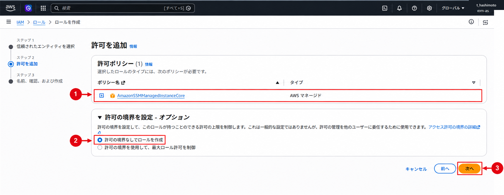
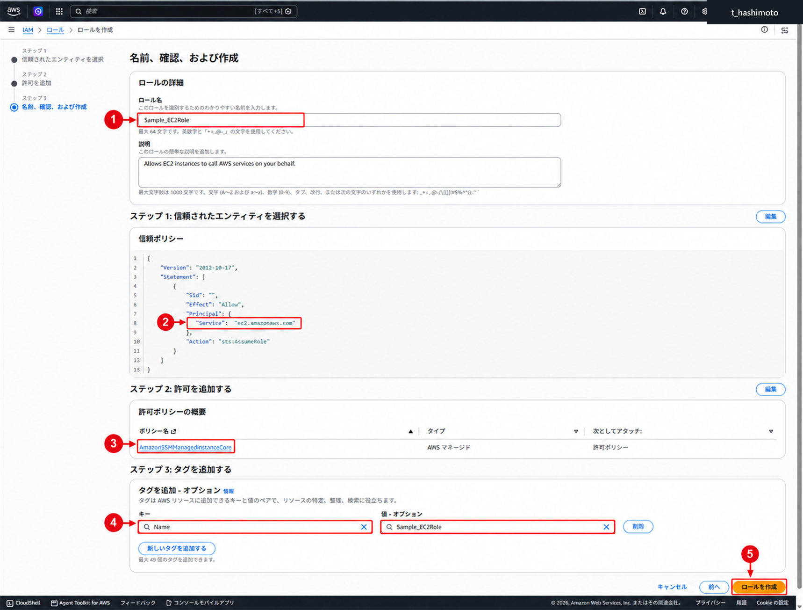
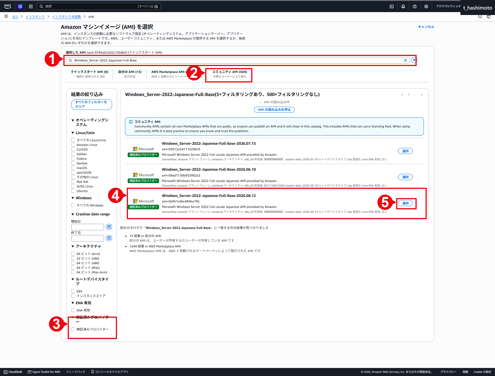
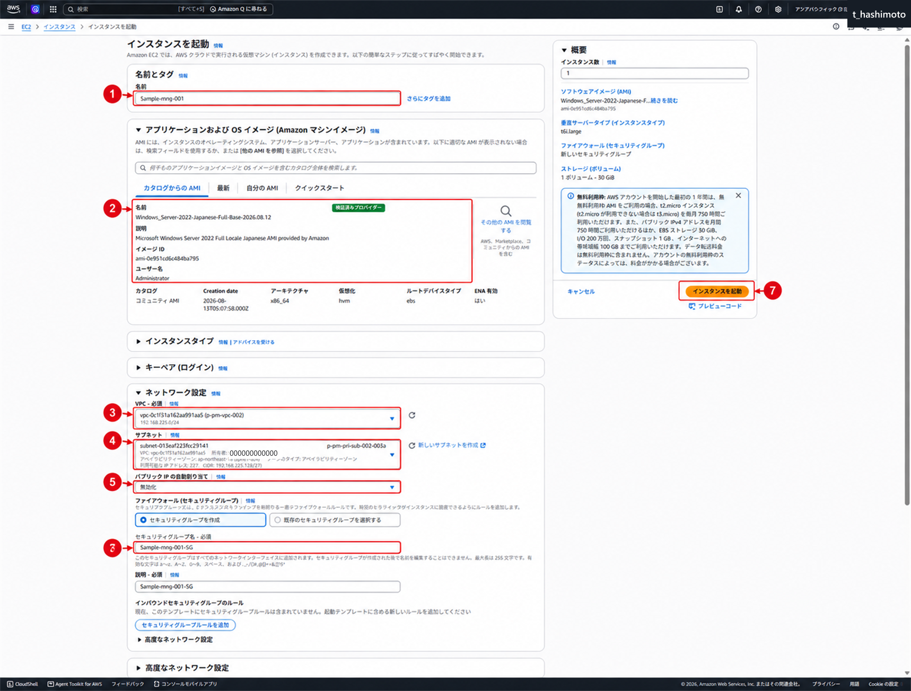
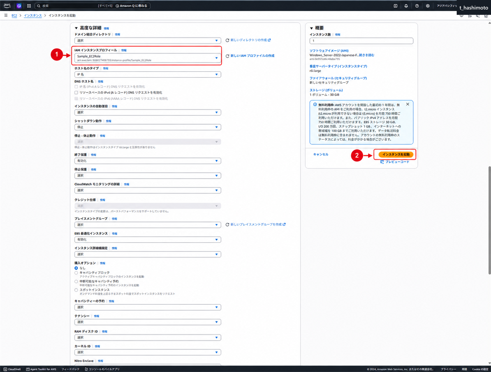
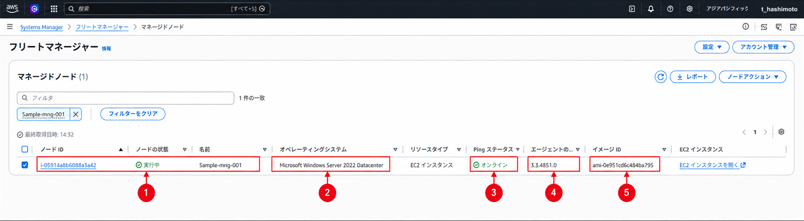
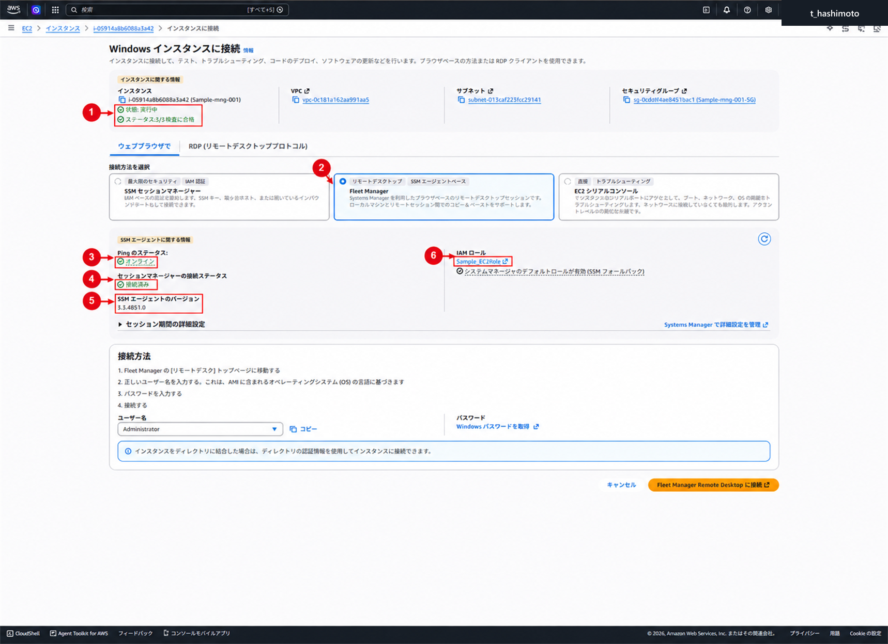

Systems Manager環境構築
仕様
構成・動作
EC2インスタンスプロファイルへAmazonSSMManagedInstanceCoreと用途別の権限を付与します。S3出力権限は出力先に合わせて別途確認します。
管理範囲
本書の設定表と画像は検証環境の例です。実作業では承認済みパラメータシートの値を使用します。
制約事項
Systems Manager用の受信ポートは不要です。対象ノードからSystems Manager、必要なS3バケットおよび更新元へ接続できる通信経路を用意します。

| 機能 | 役割 |
|---|---|
| SSM Agent | Windows EC2上でSystems Managerから受け取った命令を実行する |
| EC2用IAMロール | SSM AgentがSystems Managerや出力先S3へアクセスする権限を提供する |
| Patch Baseline | 適用対象とする更新プログラムの分類、重要度、承認条件などを定義する |
| Patch Group | EC2と、そのEC2へ適用するパッチベースラインを関連付ける |
| Maintenance Windows | パッチ処理を実行できる日時と時間帯を定義する |
| Maintenance Windowターゲット | Maintenance Windowsの処理対象となるEC2をタグ条件などで指定する |
| Run Commandタスク | AWS-RunPatchBaselineを実行してScanまたはInstallを行う |
| S3 | Run Commandの標準出力および標準エラーを保存する |
| Compliance | Scan／Install後のパッチ適用状況を確認する |
| Fleet Manager | マネージドノードのOnline状態、OS、SSM Agentバージョンなどを確認する |
構築作業
1. EC2用IAMロールを作成する
目的
EC2上のSSM AgentをSystems Managerへ登録し、Run CommandおよびPatch Managerを使用できるようにします。
AWSでは、組織の運用方式に適合する場合はDefault Host Management Configurationの利用を推奨しています。本手順では、本番環境の既存設計を再現する場合にも使用できるよう、EC2インスタンスプロファイルを個別に割り当てる構成を扱います。個別ロールを作成する場合は、信頼されたエンティティのユースケースに「EC2」を選び、基本ポリシーとしてAmazonSSMManagedInstanceCoreを付与します。旧ユースケースEC2 Role for AWS Systems Managerは新規構築で選択しません。
Configure instance permissions required for Systems Manager
操作
- IAMコンソールで「ロール」－「ロールを作成」を選択します。
- 「信頼されたエンティティタイプ」で「AWSのサービス」を選択します。
- ユースケースで「EC2」を選択します。
- AWS管理ポリシー
AmazonSSMManagedInstanceCoreを選択します。 - S3出力、CloudWatch Logs、KMSなどを使用する場合だけ、必要な操作と対象リソースに限定した用途別ポリシーを追加します。
- ロール名を入力し、信頼ポリシーのサービスプリンシパルが
ec2.amazonaws.comとなっていることを確認します。 - 設定内容を確認してロールを作成します。
本番環境の既存ロールに付与された4ポリシーは、後述の比較表へ調査結果として記録します。これは新規ロールの作成手順ではなく、4ポリシーを新規ロールへ一括付与して再現するものでもありません。


設定の確認
- EC2を信頼するIAMロールが作成されている
- EC2起動画面のIAMインスタンスプロフィールで作成したロールを選択できる
- 今回の検証では
Sample_EC2RoleへAmazonSSMManagedInstanceCoreが付与されている
本番環境で確認された4ポリシー
次の4ポリシーは既存ロールの調査結果を示すものです。新しいワークロード用EC2インスタンスロールへ付与する推奨セットではありません。特にAmazonSSMFullAccessはSSM Agentの基本通信には不要なため、インスタンスロールへ自動的に追加しません。
| 正式名称 | 用途・扱い |
|---|---|
AmazonEC2RoleforSSM |
旧来のSSM用サービスロールポリシー。AWS資料では廃止予定とされ、AmazonSSMManagedInstanceCoreへの移行が案内されている |
AmazonSSMFullAccess |
Systems Manager全体への広い操作権限。お客様既存構成として記録する |
AmazonSSMManagedInstanceCore |
EC2をSystems Managerのマネージドノードとして動作させる基本権限 |
CloudWatchAgentAdminPolicy |
CloudWatch Agentの管理、メトリクス／ログ送信、関連Parameter Store操作に使用 |
本書では差分確認のため上記4ポリシーを記録します。既存ロールを変更する場合は、利用中の機能と実際のAPIアクセスを確認し、AmazonSSMManagedInstanceCoreと用途別の限定権限へ段階的に移行します。
弊社標準と最小権限の違い
弊社標準として指定された正式名称は、AWS管理ポリシーAmazonSSMFullAccessです。一方、AWS公式のEC2インスタンスプロファイル手順はAmazonSSMManagedInstanceCoreを基本としています。AmazonSSMFullAccessはssm:*などの広い操作権限を持ち、SSM Agentの基本通信だけを目的とするEC2ロールには必須ではありません。最小権限構成ではAmazonSSMManagedInstanceCoreを基本とし、S3、KMS、Directory Service、CloudWatch Logsなどの権限を利用機能と対象リソースに限定して追加します。
本番環境のS3出力権限
AmazonSSMFullAccessにはS3への書き込み権限は含まれません。一方、本番環境で付与されている旧ポリシーAmazonEC2RoleforSSMには、全リソースを対象とするs3:PutObject、s3:GetObject、s3:GetBucketLocation等が含まれます。既存のpatchmanager/出力も確認できるため、本番環境の再現では既存ロールの付与状況と実際の書き込み成功を確認し、不足する権限だけを追加します。
検証環境で同様に最小権限化する場合は、AmazonSSMManagedInstanceCoreを基本とし、arn:aws:s3:::sample-mw-bucket/patchmanager/*への必要な書き込み権限等へ限定したカスタムポリシーを用意します。切り替えテストが完了するまでAmazonEC2RoleforSSMを先に外しません。
S3出力だけに限定するポリシー例
次は同一アカウントの既存バケットへRun Command出力を書き込む用途に限定した例です。実際の暗号化方式、アクセス境界、SCPおよびバケットポリシーを確認してから適用します。
{
"Version": "2012-10-17",
"Statement": [
{
"Sid": "WritePatchManagerCommandOutput",
"Effect": "Allow",
"Action": "s3:PutObject",
"Resource": "arn:aws:s3:::sample-mw-bucket/patchmanager/*"
},
{
"Sid": "ReadPatchLogBucketSettings",
"Effect": "Allow",
"Action": [
"s3:GetBucketLocation",
"s3:GetEncryptionConfiguration"
],
"Resource": "arn:aws:s3:::sample-mw-bucket"
}
]
}SSE-KMSを使用する場合は対象KMSキーの必要権限を追加します。別アカウントのバケットへ出力する場合は、バケット側許可と必要に応じてs3:PutObjectAclも検討します。
2. 既存のログ保存用S3バケットを使用する
必要性
対象環境では、既存バケットsample-mw-bucketのpatchmanager/プレフィックスへRun Commandの実行ログを保存します。したがって、新しいS3バケットは作成せず、既存バケットとプレフィックスを出力先として指定します。
実行成功判定では、対象のMaintenance Window実行時刻、コマンドID、ノードIDおよびS3へ保存された出力オブジェクトを突き合わせます。
⚠️ 注意：S3書き込み権限の確認
CloudTrail用の既存バケットポリシーが設定されていても、それだけではPatch Manager／Run Commandの書き込み権限を満たしません。S3出力を有効にする場合は、対象ノードへ割り当てたEC2インスタンスプロファイルが、指定プレフィックスへ出力を書き込めることを確認します。
操作
- S3コンソールで既存バケット
sample-mw-bucketを開きます。 patchmanager/プレフィックスが存在し、過去の実行ログが保存されていることを確認します。- 「パブリックアクセスをすべてブロック」、サーバー側暗号化、ライフサイクルルールおよび保存期間を確認します。
- 対象EC2のインスタンスプロファイルに、指定プレフィックスへのS3出力権限が付与されていることを確認します。必要なS3権限の許可元を確認し、不足する場合は指定プレフィックスに限定して追加します。
- Run Commandタスクの出力オプションで「S3への書き込みの有効化」を選択します。
- S3バケット名へ
sample-mw-bucket、キープレフィックスへpatchmanagerを入力します。 - テスト実行後、対象実行に対応する出力オブジェクトが作成されたことを確認します。
検証環境の入力値は、⑪に記載したRun Commandタスクのパラメータ画面で確認できます。画像内のバケット名は検証用のsample-mw-bucketです。対象環境では上記の既存バケットへ読み替えます。

設定の確認
- パブリックアクセスがブロックされたログ用バケットが存在する
- EC2インスタンスロールが指定プレフィックスへ出力を書き込める
- 実行後、コマンドIDおよびノードIDに対応する標準出力／標準エラーが保存される
今回の確認結果
2026年9月8日01:00 JSTのInstall実行について、sample-mw-bucket/patchmanager/へ出力が保存されたことを確認しました。S3出力内のコマンドID9c048d9e-720c-47bc-ab41-b7d5fdc43045、ノードIDi-05914a8b6088a3a42、OperationType=Installおよび実行時刻をRun Command画面と突き合わせます。初回確認時にオブジェクトが見えない場合も、Run Command本体の成否とは分け、更新後の一覧、指定バケット／プレフィックス、コマンドID配下を再確認します。
Run CommandタスクのS3出力は、操作ユーザーではなく、対象マネージドノードへ割り当てたインスタンスプロファイルの権限で書き込まれます。Assign tasks to a maintenance window using the console
3. 検証用Windows EC2を作成する
今回の設定値
- インスタンス名：
Sample-mng-001 - AMI：
ami-0e951cd6c484ba795 - AMI名：
Windows_Server-2022-Japanese-Full-Base-2026.08.12 - インスタンスタイプ：
r6i.large - パブリックIPv4アドレス：無効
- IAMインスタンスプロフィール：
Sample_EC2Role - セキュリティグループ：SSM利用だけを目的とする場合、受信ポートは不要
Windows Server 2022日本語AMIを検索する
- EC2コンソールの「インスタンスを起動」で、「その他のAMIを閲覧する」を選択します。
- 右上のリージョンが「アジアパシフィック（東京）」となっていることを確認します。
- 「コミュニティAMI」を開き、検索欄へ
Windows_Server-2022-Japanese-Full-Baseを入力します。 - 「検証済みプロバイダー」で絞り込みます。
- 対象行で、AMI名、AMI ID、
OwnerAlias: amazon、プラットフォームwindows、アーキテクチャx86_64およびルートデバイスタイプebsを確認します。 - 既存環境を再現する場合は、設計書に記載された日付付きAMI名とAMI IDが一致する行を選択します。新規構築で最新AMIを採用する場合は、動作確認と変更承認を経てから選択します。
Find an AMI that meets the requirements for your EC2 instance

最新版をコマンドで確認する方法
最新のAmazon提供AMIを参照する場合は、Systems Managerのパブリックパラメータを利用できます。次のコマンドは東京リージョンにおける最新のWindows Server 2022日本語Full Base AMI IDを返します。日付を固定した既存環境の再現には使用せず、返されたAMI名と検証済み所有者を別途確認します。
aws ssm get-parameter --name "/aws/service/ami-windows-latest/Windows_Server-2022-Japanese-Full-Base" --region ap-northeast-1 --query "Parameter.Value" --output textFind the latest AMIs using Systems Manager parameters
AMI IDはリージョンごとに異なり、同じ製品でもリリースごとに更新されます。したがって、手順書には検索文字列だけでなく、検証で使用したAMI名とAMI IDの両方を記録します。
操作
- EC2コンソールで「インスタンスを起動」を選択します。
- 名前、AMI、インスタンスタイプ、キーペア、VPC、サブネットおよびセキュリティグループを指定します。
- 「高度な詳細」で作成したIAMインスタンスプロフィールを選択します。
- SSM、SSM Messages、EC2 Messages、必要なAWS管理S3バケットおよびWindows Update Catalog／WSUSへ到達できる通信経路を確認します。
- インスタンスを起動し、状態が「実行中」、全ステータスチェックが合格になるまで待ちます。


注意事項
- AMI IDはリージョン固有です。AMIが表示されない場合は別AMIへ無断で置き換えません。
- RDPを使う場合はTCP/3389の接続元を承認済み管理元へ限定します。
Patch Groupタグは、使用するパッチベースラインとPatch Group値を確定してから付与します。
4. SSM Agentとマネージドノードを確認する
Amazon提供のWindows Server AMIには通常SSM Agentがプレインストールされているため、先にサービス状態とバージョンを確認し、未導入の場合だけインストールします。
Windows上で確認する
管理者権限のPowerShellで次を実行します。
Get-Service AmazonSSMAgent
Get-CimInstance Win32_Service -Filter "Name='AmazonSSMAgent'" |
Select-Object Name, State, StartMode, PathName
& 'C:\Program Files\Amazon\SSM\amazon-ssm-agent.exe' -version次の結果を確認します。
- サービス状態が
Runningです - 開始モードが
Autoです - SSM Agentのバージョンが表示される
未導入でSystems Managerから接続できない場合は、次のいずれかの経路でWindowsへ管理者接続してインストールします。
- 承認済み接続元からのRDP
- EC2 Serial Console（Windows側の事前設定と権限がある場合）
- Systems Manager以外の踏み台／運用接続経路
- AMI作成工程またはUser Dataによる事前導入
SSM Agentがない状態ではFleet Manager、Session Manager、Run Commandからインストールできません。
SSM Agentが未導入の場合
Amazon提供のWindows Server 2022 AMIには、通常SSM Agentがプレインストールされています。Get-Service AmazonSSMAgentでサービスが見つからない場合だけ、次の手順を実施します。SSM Agentが未導入または停止している状態では、Session Manager、Fleet ManagerおよびRun Commandをインストール経路として使用できないため、RDP、踏み台、EC2 Serial Console、User Dataなど、Systems Manager以外の承認済み管理経路を使用します。
- Windows Serverへ管理者権限で接続します。
- Windows PowerShell 3.0以降が利用できることを確認します。
- 管理者権限のPowerShellで、東京リージョンの64-bit版インストーラーをダウンロードしてサイレントインストールします。
[System.Net.ServicePointManager]::SecurityProtocol = 'TLS12'
$installerPath = Join-Path $env:TEMP 'AmazonSSMAgentSetup.exe'
Invoke-WebRequest `
-Uri 'https://amazon-ssm-ap-northeast-1.s3.ap-northeast-1.amazonaws.com/latest/windows_amd64/AmazonSSMAgentSetup.exe' `
-OutFile $installerPath
Start-Process -FilePath $installerPath -ArgumentList '/S' -Wait
Restart-Service AmazonSSMAgent
Remove-Item -LiteralPath $installerPath -Force- サービス状態、開始方式およびバージョンを確認します。
Get-Service AmazonSSMAgent
Get-CimInstance Win32_Service -Filter "Name='AmazonSSMAgent'" |
Select-Object Name, State, StartMode, PathName
& 'C:\Program Files\Amazon\SSM\amazon-ssm-agent.exe' -version- EC2へSystems Manager用IAMロールが割り当てられ、HTTPS（TCP/443）で必要なSystems Managerエンドポイントへ到達できることを確認します。
- 数分後にFleet Managerで対象ノードが
Onlineとなることを確認します。
Runningにならない場合は、C:\ProgramData\Amazon\SSM\Logs\amazon-ssm-agent.log、IAMインスタンスプロフィール、DNS、プロキシおよびTCP/443の通信経路を確認します。
Manually installing and uninstalling SSM Agent on EC2 instances for Windows Server
Fleet Managerで確認する
- Systems Managerの「フリートマネージャー」を開きます。
- 対象EC2のノード状態が「実行中」、Ping statusが「オンライン」となっていることを確認します。
- OS、AMI、SSM Agentバージョン、IAMロールを記録します。


今回の検証では、Sample-mng-001がOnlineで、SSM Agentバージョン3.3.4851.0となっていることを確認しました。